SECCIÓN 5B2
CAJA DE CAMBIOS MANUAL DE CINCO VELOCIDADES (Y4M)
Precaución: Desconecte el cable negativo de la batería antes de quitar o instalar alguna unidad eléctrica, o cuando una herramienta o equipo puede entrar fácilmente en contacto con bornes eléctricos al descubierto. La desconexión de este cable ayudará a prevenir lesiones personales y daños en el vehículo. El encendido también debe estar bloqueado a menos que se especifique lo contrario.
ESPECIFICACIONES
Especificaciones generales
Aplicación | Descripción | Unidad | Estándar | Límite |
General | Tipo | Marcha de avance | - | Toma sincronizada | - |
. | Marcha atrás | - | Toma deslizante | - |
Relación de cambio | 1ª | - | 3.416 | - |
. | 2ª | - | 1.950 | - |
. | 3ª | - | 1.280 | - |
. | 4ª | - | 0.971 | - |
. | 5ª | - | 0.757 | - |
. | Marcha atrás | - | 3.272 | - |
Relación de cambio final | - | 4.105 | - |
Capacidad de aceite | L (cuartos) | 2.1 (2.21) | - |
Clasificación del aceite | - | 75W-85 (GL-4) | - |
Servicio | Anchura del chavetero del anillo sincronizador | 1ra, 2da, 3ra, 4ta marchas | mm (pulg.) | 9.6 (0.378) | 10.0 (0.394) |
. | Quinta marcha | mm (pulg.) | 9.4 (0.370) | 9.8 (0.386) |
Espesor del extremo de la horquilla de cambio | Horquilla de cambio de baja velocidad (primera-segunda) | mm (pulg.) | 8.7 (0.343) | 8.1 (0.319) |
. | Horquilla de cambio de alta velocidad (tercera-cuarta) | mm (pulg.) | 7.8 (0.307) | 7.2 (0.283) |
. | Horquilla de cambio de la quinta marcha | mm (pulg.) | 7.8 (0.307) | 7.2 (0.283) |
Holgura entre el engranaje y el anillo sincronizador | mm (pulg.) | 1.0 (0.039) | 0.5 (0.020) |
Holgura entre el manguito y la horquilla de cambio | mm (pulg.) | 0.2-0.6 (0.008-0.024) | 1.0 (0.039) |
Juego de empuje libre del engranaje lateral del diferencial | mm (pulg.) | 0.05-0.33 (0.002-0.013) | - |
Relación de cambio del velocímetro (impulsado/impulsor) | - | 17/18 (0.944) | - |
Especificaciones de apriete
Aplicación | N•m | Lb-Ft | Lb-In |
Tornillo del eje de cambio de quinta-marcha atrás | 10-16 | 7-12 | - |
Tuerca del conmutador de las luces de marcha atrás | 15-18 | 11-13 | - |
Tuerca del engranaje de la quinta marcha del contraeje | 60-80 | 44-59 | - |
Tornillo del sensor de posición del cigüeñal | 5-8 | - | 44-70 |
Tornillo del engranaje anular del diferencial | 80-100 | 59-74 | - |
Tornillo del eje de cambio de alta velocidad | 10-16 | 7-12 | - |
Tornillo del eje de cambio de baja velocidad | 10-16 | 7-12 | - |
Purgador de aceite | 25-30 | 18-22 | - |
Tapón de nivel de aceite | 25-30 | 18-22 | - |
Tornillos del soporte de la manguera inferior del radiador | 8-15 | - | 70-132 |
Tornillo del eje del engranaje loco de la marcha atrás | 18-28 | 13-21 | - |
Tornillo de la palanca de cambio de la marcha atrás | 18-28 | 13-21 | - |
Tornillo del soporte del cable | 18-28 | 13-21 | - |
Tornillo de placa izquierda de caja | 6-7 | - | 53-62 |
Tornillo del bloqueo de cambios | 18-28 | 13-21 | - |
Tornillo de la cubierta lateral | 8-12 | - | 71-106 |
Tornillo del engranaje impulsado del velocímetro | 5-8 | - | 44-71 |
Tornillo de la carcasa de la caja de cambios | 15-22 | 11-16 | - |
Tornillo inferior de la caja de cambios (Lado del motor) | 55-65 | 41-48 | - |
Tornillos del soporte de montaje de la caja de cambios | 55-65 | 41-48 | - |
Tornillo superior de la caja de cambios (lado del motor) | 55-65 | 41-48 | - |
Tornillos de fijación del bloque amortiguador trasero | 50-60 | 37-44 | - |
Tornillos del soporte trasero de montaje | 55-65 | 41-48 | - |
Tornillo y tuerca de conexión de bloque amortiguador | 75-85 | 55-63 | - |
HERRAMIENTAS ESPECIALES
Tabla de herramientas especiales

 
| 09913-76010 Instalador de casquillos y juntas herméticas |

| DW 09913-80112 Instalador de engranajes y cojinetes |

| DW 09921-57810 Extractor de engranajes y cojinetes |

| DW 09925-98221 Instalador de engranajes y cojinetes |

| DW 09940-53111 Instalador de engranajes y cojinetes |

| DW 09943-78210 Instalador de casquillos y juntas herméticas |

| DW110-060 Dispositivo de soporte del conjunto de motor |
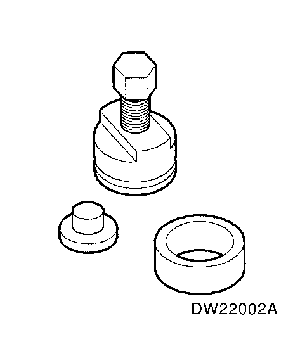
| DW 220-020A-01 Cojinete del diferencial Extractor |
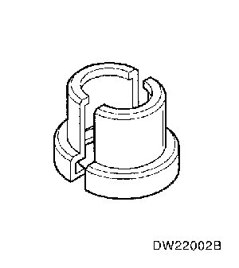
| DW 220-020A-02 Cojinete del diferencial Adaptador de placa |
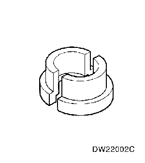
| DW 220-020A-03 Cojinete del diferencial Adaptador de placa |
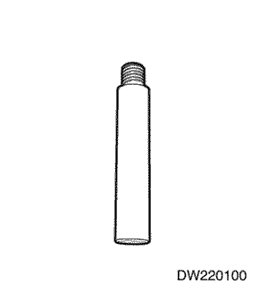
| DW220-100 Rodamiento de agujas Extractor |
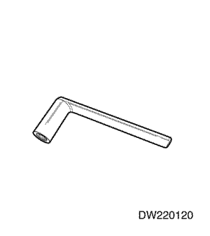
| DW220-120 Eje primario Soporte |
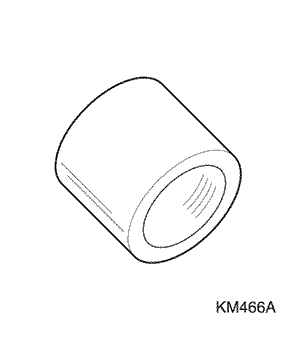
| KM 466-A Instalador/extractor de engranajes cojinetes |
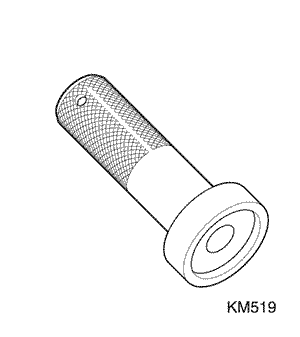
| KM 519 Instalador de juntas herméticas de aceite |
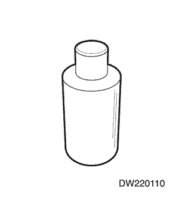
| DW220-110 Rodamiento de agujas Instalador |
DIAGNÓSTICO
Diagnóstico general
Condición | Causa probable | Corrección |
La marcha salta | - Horquilla de cambio desgastada.
| - Sustituya la horquilla de cambio.
|
- Manguito o engranaje del sincronizador desgastado.
| - Sustituya el manguito o el engranaje.
|
- Cojinetes desgastados en el eje primario o en el contraeje.
| |
- Muelle de retención debilitado o dañado.
| |
- Muelle del sincronizador flojo o dañado.
| - Sustituya el muelle del sincronizador.
|
- Holgura excesiva del engranaje
| - Ajuste la holgura del engrane.
|
El engranaje roza | - Eje de cambio u horquilla de cambio doblada o deformada.
| - Sustituya el eje de cambio o la horquilla de cambio.
|
- Muelle del sincronizador debilitado o dañado.
| |
Dificultad para cambiar las marchas | - Anillo sincronizador desgastado.
| - Sustituya el anillo sincronizador.
|
- Manguito o engranaje del sincronizador desgastado.
| - Sustituya el manguito o el engranaje.
|
- Eje de cambio doblado o deformado.
| - Sustituya el eje de cambio.
|
- Demasiado juego libre de todos los engranajes, en sentido axial.
| - Sustituya los engranajes.
|
- Cojinetes desgastados en el eje primario o en el contraeje.
| |
- Mal ajuste del cable del embrague.
| - Ajuste el cable del embrague.
|
- Disco de embrague deformado o roto.
| - Sustituya el disco de embrague.
|
- Cubierta del embrague dañada
| - Sustituya la cubierta del embrague
|
Ruido en el engranaje de neutral | | |
- Engranaje del eje primario desgastado.
| - Sustituya los engranajes.
|
- Cojinetes desgastados en los engranajes del eje primario.
| |
- Cojinete de desembrague desgastado.
| - Sustituya el cojinete de desembrague.
|
Ruido en todos los engranajes. | | |
- Cojinetes desgastados en el eje primario o en el contraeje.
| |
- Engranaje desgastado en el eje primario o en el contraeje.
| - Sustituya los engranajes.
|
- Anillo sincronizador desgastado o dañado.
| - Sustituya el anillo sincronizador.
|
- Manguito del sincronizador desgastado o dañado.
| - Sustituya el manguito del sincronizador.
|
- Engranaje o cojinete del diferencial desgastado
| - Sustituya el engranaje o el cojinete.
|
Ruido en un engranaje en específico | - Anillo sincronizador desgastado o dañado, en ese engranaje en específico.
| - Sustituya el anillo sincronizador.
|
- Engranaje desgastado o dañado en ese engranaje en específico.
| - Sustituya los engranajes.
|
- Cojinete desgastado o dañado en ese engranaje en específico.
| |
Fuga de lubricante | - Junta hermética de aceite dañada
| - Sustituya la junta hermética de aceite.
|
Comprobar el nivel de líquido
Revise la zona de la caja de la caja de cambios y la junta hermética para ver hay alguna fuga y, a continuación, compruebe el nivel de aceite y el estado del éste, después de desmontar el tapón del nivel de aceite.
- Ponga en marcha el motor hasta que alcance la temperatura normal de funcionamiento (temperatura del refrigerante : 80 ~ 90°C (176 ~ 194°F)).
- Cale el motor y eleve el vehículo.
- Desmonte el tapón del nivel de aceite y compruebe el nivel de aceite.
- Debe salir un poco de aceite por el orificio del tapón del nivel de aceite.
- Si el nivel es bajo, añada el aceite recomendado, a través del orificio del tapón del nivel de aceite, hasta que el aceite comience a desbordarse.
- Si el aceite está contaminado o ha perdido su color, sustitúyalo con el aceite recomendado.
- Vuelva a montar el tapón del nivel de aceite y apriételo bien.
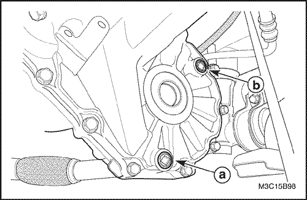
Cambio de aceite de la caja de cambios
- Ponga en marcha el motor hasta que alcance la temperatura normal de funcionamiento (temperatura del refrigerante : 80 ~ 90°C (176 ~ 194°F)).
- Cale el motor y eleve el vehículo.
- Drene el aceite después de desmontar el tapón de drenaje.
- Vuelva a montar el tapón de drenaje y apriételo bien, después de aplicarle un compuesto obturador.
- Desmonte el tapón del nivel de aceite y añada aceite hasta que comience a desbordarse.
- a. Tapón de drenaje de aceite.
- b. Tapón del nivel de aceite
- Vuelva a montar el tapón del nivel de aceite y apriételo bien.
Especificaciones del aceite | 75W-85(GL-4) |
Capacidad de líquido | 2,1L (2,21 cuartos) |
Intervalo de mantenimiento | Consulte el Manual de usuario |
Comprobación de ruidos de la caja de cambios
Muchos de los ruidos que parecen provenir de la caja de cambios pueden ser originados realmente por otras fuentes tales como los neumáticos, superficie de la carretera, cojinetes de ruedas, o motor y sistema de escape.
Identifique la causa de cualquier ruido antes de intentar reparar el embrague, la caja de cambios o sus varillajes asociados.
Para verificar los ruidos sospechosos de la caja de cambios:
- Seleccione un camino de asfalto, suave y nivelado, para reducir el ruido de los neumáticos y la resonancia de la carrocería.
- Conduzca el vehículo lo suficientemente lejos como para calentar perfectamente todos los lubricantes.
- Anote la velocidad y gama de marcha de la caja de cambios cuando ocurra el ruido.
- Verifique si hay ruidos con el vehículo detenido pero con el motor en marcha.
- Determine si el ruido se produce cuando el vehículo funciona en:
- Conducción - bajo una ligera aceleración o una fuerte tracción.
- Conducción sostenida - manteniendo una velocidad constante, con una ligera aceleración, sobre una carretera nivelada.
- Inercia - con una marcha puesta en la caja de cambiosy el acelerador parcial o completamente cerrado.
- Cualquiera de las anteriores.
Comprobación de ruidos de los cojinetes
Ruido de cojinete lateral del diferencial
Los ruidos de cojinete lateral del diferencial y de cojinete de las ruedas pueden confundirse fácilmente. Puesto que los cojinetes laterales están precargados, el ruido de un cojinete lateral del diferencial no debe disminuir mucho cuando la caja de cambios/diferencial se hacen funcionar con las ruedas levantadas del piso.
Ruido de cojinetes de las ruedas
Los cojinetes de las ruedas producen un gruñido áspero o rechinido que continúa cuando el vehículo se desliza y la caja de cambios está en NEUTRAL. Puesto que los cojinetes de ruedas no están precargados, un ruido de cojinete de ruedas debe disminuir considerablemente cuando las ruedas están levantadas del piso.
LOCALIZADORES DE COMPONENTES
Control de cambio de marchas
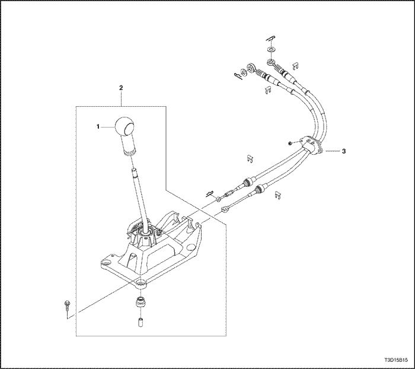
- Pomo de la palanca de control de cambios
- Conjunto de la palanca de control de cambio de marchas
- Cable de selección y cambio
Eje primario y engranaje del contraeje
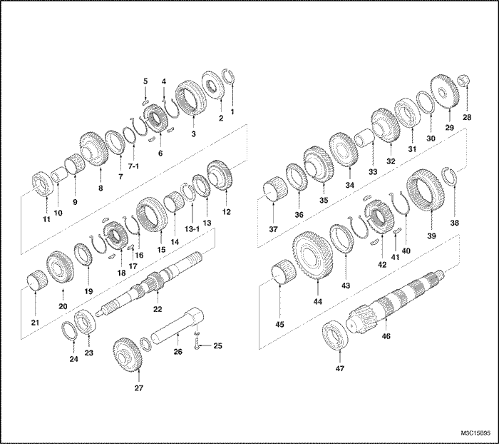
- Clip circular del eje primario
- Plato del sincronizador de la quinta marcha
- Manguito del sincronizador de la quinta marcha
- Muelle del sincronizador de la quinta marcha
- Chaveta del sincronizador de la quinta marcha
- Cubo del sincronizador de la quinta marcha
- Anillo sincronizador de la quinta marcha
7-1 Muelle ondulado
- Engranaje de la quinta marcha del eje primario
- Cojinete del engranaje de la quinta marcha del eje primario
- Separador de engranaje de la quinta marcha del eje primario
- Cojinete del eje primario (izquierda)
- Engranaje de la cuarta marcha del eje primario
- Anillo sincronizador de la cuarta marcha
13-1 Circlip
- Cojinete del engranaje de la cuarta marcha del eje primario
- Manguito del sincronizador de tercera y cuarta marchas
- Muelle del sincronizador de tercera-cuarta marchas
- Chaveta del sincronizador de tercera-cuarta
- Cubo del sincronizador de tercera-cuarta
- Anillo sincronizador de la tercera marcha
- Engranaje de la tercera marcha del eje primario
- Cojinete del engranaje de la tercera marcha del eje primario
- Eje primario
- Cojinete del eje primario (derecha)
- Junta hermética de aceite del eje primario
- Tornillos del eje del engranaje de marcha atrás
- Eje del engranaje de marcha atrás
- Engranaje loco de la marcha atrás
- Tuerca del contraeje
- Engranaje de la quinta marcha del contraeje
- Calzo del cojinete del contraeje
- Cojinete del contraeje (izquierda)
- Engranaje de la cuarta marcha del contraeje
- Separador de los engranajes de tercera-cuarta marcha del contraeje
- Engranaje de la tercera marcha del contraeje
- Engranaje de la segunda marcha del contraeje
- Anillo sincronizador de la segunda marcha
- Cojinete del engranaje de la segunda marcha del contraeje
- Clip circular del sincronizador de primera-segunda
- Manguito del sincronizador de primera-segunda
- Muelle del sincronizador de primera-segunda
- Chaveta del sincronizador de primera-segunda
- Cubo del sincronizador de primera-segunda
- Anillo sincronizador de la primera marcha
- Engranaje de la primera marcha del contraeje
- Cojinete del engranaje de la primera marcha del contraeje
- Contraeje
- Cojinete del contraeje (derecha)
Horquilla de cambio
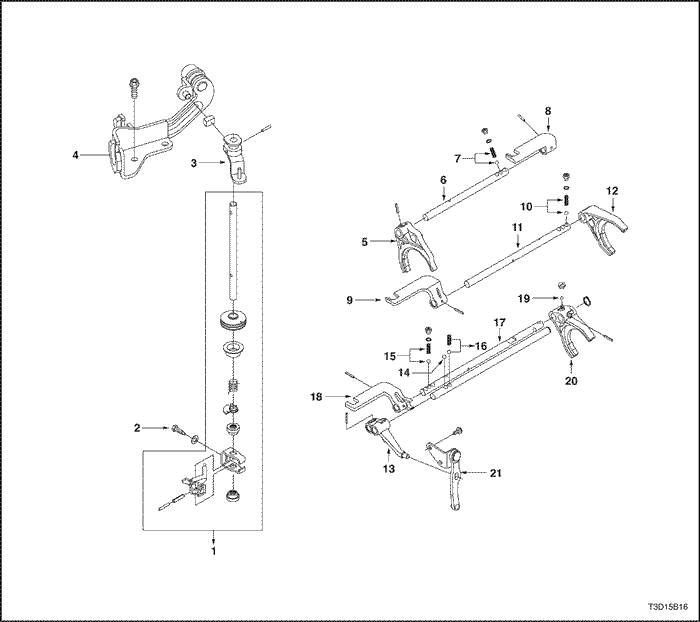
- Barra de cambio y selección
- Tornillo del bloqueo de cambios
- Palanca de cambios
- Soporte
- Horquilla de cambio de baja velocidad
- Eje de cambio de baja velocidad
- Muelle/bola del eje de cambio de baja velocidad
- Horquilla de cambio de baja velocidad
- Horquilla de cambio de alta velocidad
- Muelle/bola del eje de cambio de alta velocidad
- Eje de cambio de alta velocidad
- Horquilla de cambio de alta velocidad
- Brazo de cambio de la marcha atrás
- Bola del cambio de quinta a marcha atrás
- Bola/muelle del eje de cambio de quinta-marcha atrás
- Bola/muelle de la guía el eje de cambio de la marcha atrás
- Eje de cambio de quinta-marcha atrás
- Horquilla de cambio de quinta-marcha atrás
- Bola guía de la horquilla de cambio de la quinta marcha
- Horquilla de cambio de la quinta marcha
- Palanca de cambio de la marcha atrás
Diferencial y caja

- Engranaje arrastrado del velocímetro
- Conmutador de las luces de marcha atrás
- Carcasa de la caja de cambios (derecha)
- Carcasa de la caja de cambios (izquierda)
- Canalón de aceite
- Placa izquierda de caja
- Cubierta lateral
- Corona del diferencial
- Junta hermética de aceite del diferencial (izquierda)
- Cojinete del diferencial (izquierda)
- Caja del diferencial
- Engrane impulsor del velocímetro
- Cojinete del diferencial (derecha)
- Junta hermética de aceite del diferencial (derecha)
- Pasador de eje del piñón del diferencial
- Calzo de ajuste del engranaje lateral del diferencial
- Engrane lateral del diferencial
- Eje del piñón del diferencial
- Engrane piñón del diferencial
- Arandela del piñón del diferencial